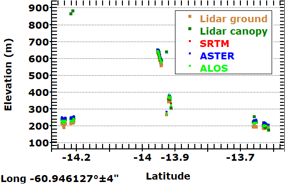

From the DB created by the canopy button; no other data required.
Pick Location in one of two ways
- Double clicking on a record in data base (can be challenging to get the one you want
-
 ID button on
map
toolbar or database window, double clicking on the map, and then
clicking the options button
ID button on
map
toolbar or database window, double clicking on the map, and then
clicking the options button
From popup, pick "Point cloud and global DEMs"
Pick Lat profile, long profile, or Both profiles
Pick the tolerance in arc seconds. You want to get enough points, without have side slope distorting results
Lower left corner shows the parallel or meridian along which the profile runs
Right clicking on the graph has an option to get a legend, which you can paste into the graph.
Icesat-2 has challenges because the orbital tracks do not line up with the parallels and meridians, and you will see the gaps. The filter option below might be better.
The profiles for lidar are continuous.